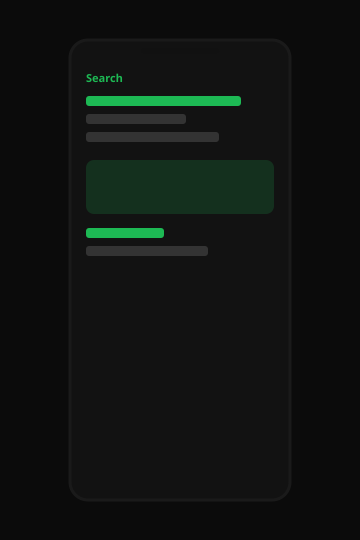

App Redesign
Giving a beloved music app the seamless, user-centric refresh it deserves.

[Image: 3 phones showing the redesigned home, now playing, and search]
I use Spotify every day. Like, every day. Getting ready in the morning, walking to a coffee shop, sitting down to design, cooking, winding down — there is always a playlist on. So when I was looking for a passion project that would let me really flex both my UX and UI skills, the answer was right there on my phone. I decided to redesign Spotify. Not because anyone asked me to. Because I knew I could make it more delightful.
Users wanted a better experience. That was clear to me from the beginning. The app has been around for a long time and it has a lot of features, and with a lot of features comes a lot of opportunity. Opportunity to simplify. Opportunity to modernize. Opportunity to add a bit of magic back into something people take for granted. We see these big apps as untouchable, but they're just screens, and screens can always be more intuitive.
This case study walks through the full process we used — Empathize, Define, Ideate, Prototype, Test — to reimagine the app from the ground up while still keeping the soul of what people love. Spoiler: the green stays. Some things are iconic for a reason.

[Image: 6 screens from the final redesign]
Empathize
We started with empathy because even when you are the user, you are not every user. I know my own habits (shuffle, skip, save, repeat) but I wanted to hear from other people who live in this app too. We conducted user interviews and sent out a survey to friends, classmates, and a few folks in a design Discord. People were excited to talk about music. Music is personal. That made the research feel rich even when the answers were, honestly, pretty similar.
What we heard: people love Spotify. They use it all the time. They have feelings about their playlists. They have feelings about Wrapped. They have feelings about when the UI changes and they have to find something again. That last one is interesting because it means any redesign has to be careful, but it also means people are paying attention, which is a gift. If nobody cares what you change, you are decorating. If they care, you are in a relationship.
We asked what they would improve. People said things like "I don't know, it's fine" and "maybe make it nicer" and "the home page is a lot." We wrote all of that down. "The home page is a lot" became a north star of sorts. We could make the home page less a lot. We could make it more curated, more premium, more like a magazine for your ears. That felt like a real problem even if nobody was, like, suffering. Suffering is not the only valid brief. Delight is a valid brief. Modernizing is a valid brief. I wrote that in my notebook and underlined it.
We also did a heuristic walkthrough of the current app, screenshotting as we went. There are a lot of screens. There are a lot of entry points. There is a lot of content, which is the whole point of the product, so you cannot just delete the content. You have to house it more beautifully. We made a moodboard of other apps that house a lot of content beautifully. Streaming apps, editorial apps, a couple of fashion e-comms. Dark backgrounds. Big album art. Type that feels like music. We were getting somewhere.

[Image: sticky notes from the listening session]
Persona time. We created Sarah. Sarah is 28, loves yoga, hates bad UX, and listens to music the way some people drink water — constantly, without thinking, until it is gone and she needs more. She has playlists for the gym, for focus, for cooking, for the train. She follows a few artists. She does not make a lot of playlists from scratch anymore because the algorithm is "pretty good." She wishes the app felt as considered as her favorite album covers. That last sentence is the kind of sentence you can design from for weeks. We did.

[Image: Sarah, our primary persona]
Define
The problem we defined was this: users wanted a better experience. The current app works, but working is not the same as feeling good. How might we redesign Spotify so that it feels more seamless, more intuitive, and more like a product designed in this decade, without losing the green, the library, or the sense that your music is yours.
We wrote that on a slide. We sat with it. It felt true. It felt like enough to start. We did not need a business case because this was a conceptual redesign — a chance to show how we think, how we craft, how we take something the whole world already knows and still find a way to make it ours. That is a very particular kind of design challenge and I think more people should try it. It forces you to have an opinion.
Our principles for the redesign: 1) Album art is the hero. 2) Fewer decisions on the home screen. 3) Dark mode is not an afterthought, it is the product. 4) Green is an accent, not a flood. 5) Sarah should always know what will happen when she taps. Simple. Repeatable. We put them in the Figma cover so we would see them every time we opened the file.

[Image: a journey map of a typical listening session]
Ideate
We sketched a lot of homes. Home is the argument. If home is right, the rest of the app can follow. We tried a home that was just one giant now-playing. We tried a home that was a vertical magazine. We tried a home that hid everything behind a search bar, which was brave and also probably wrong. We crazy-eights'd for twenty minutes and then we picked the direction that looked the most like a redesign — which is to say, the one that was clearly still Spotify, just tighter, bigger, more cinematic.
Search got a similar treatment. Search is already strong in the real app, so we did not "fix" it so much as we dressed it. Bigger type. Clearer grouping. A little more breathing room between the categories. Now playing got a glow, because music should glow. Lyrics got their own moment because lyrics are having a cultural moment and design should keep up with culture. Profile became more of a destination, more of a identity, more of a place you might actually want to visit. Wrapped energy, all year.
We did not spend a lot of time on edge cases in ideation because the point of a concept is the main stage, not the trap doors. We wanted the screens you would screenshot. We wanted the screens you would post. That is not shallow — that is about communication. A redesign case study has to read in a grid. If it doesn't read in a grid, did you even redesign it.

[Image: wireframes for home, search, and now playing]
Prototype
High fidelity came fast because we already knew the brand. Black, white, green, the type they already use, the art that already exists. A redesign like this is less about inventing a visual system and more about directing one that is already famous. We made the imagery larger. We made the lists cleaner. We made the player more immersive. We added a few surfaces that felt new without feeling foreign.
We built a prototype you could click through: home to album to player to queue to lyrics and back. It felt good in the hand, or as good as a prototype can feel in the hand when it is actually a mouse. We spent a long time on the now-playing screen because that is the screen people see in the dark, in bed, in the gym mirror. It should feel like a poster. It should feel like a place. We gave it a place.
[Image: home and album]
[Image: queue and lyrics]
Microcopy was kept friendly. We used words like "jump back in" and "made for you" because those words already work. We did not try to be funnier than the brand. The brand is not that funny. The brand is a vibe. We stayed in the vibe. Where we did invent, we invented layout, not jokes. Layout is the joke, if the joke is how much better the same content can feel when you give it room.
We also designed a few marketing-style mockups — phones on a black background, the way you see them in a keynote — because presentation is part of the work. If you cannot make the redesign look inevitable in a still, it is not done. These stills are at the top of the page. I think they look inevitable. That was the goal.
Let me linger on a few specific choices so this does not read as just a mood. On home, we led with a single large editorial module instead of a stack of mixed carousels. The module could be a playlist, an album, a podcast, whatever the system wanted to push that day. Under that, two rows instead of five. The point was not to show less music. The point was to show music with more respect. On search, we kept the keyboard and the recents and the categories because people already know how to search for songs, and teaching them a new search would have been a different project. We just gave the results more air and made the album art in the list large enough to recognize from a glance. On the album page we put the play action where your thumb already goes. On the queue we made each row easier to scan. On lyrics we went full screen because lyrics want to be full screen. On profile we made the listener look like someone with taste, not just someone with a subscription.
Was any of this requested? No. That is the joy of a conceptual redesign. You get to notice the little things that have been sitting in your muscle memory and you get to ask, what if this were a little more beautiful. You do not need a drop in retention to ask that. You do not need a quote from a frustrated user. You need a Saturday, a Figma file, and a slightly arrogant belief that you can improve a product used by millions. I had those three things. We went for it.
I thought about adding social features. I thought about adding a different way to follow friends. I thought about adding a canvas for playlists that was more like a poster maker. I thought about adding a sleep timer that looked like a moon. I did not add those, in the end, because a redesign that also becomes a feature dump is a different kind of case study and I wanted this one to be about craft. Craft is underrated in app redesigns. A lot of them add a tab. We did not add a tab. We took the tabs that exist and we dressed them. Dressing is design too.
Color, quickly. The green is mixed to a slightly softer place so it sits on black without vibrating. The whites are not pure white. The greys have a little warmth so the app does not feel like a utility. The art has a vignette in the player so the type on top of it holds. These are the kinds of decisions that disappear if you do them right, and I did them for hours. Hours is not an exaggeration. You can lose an evening to a green. I did. I would do it again.
Test
We tested with people who already use the app, which was everyone we know. We handed them the prototype and asked them to play a song. They could. We asked them to find a playlist. They could. We asked them what they thought. They said "oh, it's Spotify." Then they said "it looks cleaner." Then they said "I like the bigger art." That was the test. That was the result. People recognized it, and they liked it, and they did not get lost. For a conceptual redesign, that is a win.
A couple of people asked why we had redesigned it. That is a fair question. I think the answer is: because we could, and because the exercise of looking hard at a product you love will make you a better designer even if the product never ships. Especially if it never ships. Constraint without a stakeholder is still constraint. You are constrained by the brand, by muscle memory, by the fact that millions of people already know where the heart icon is. We did not move the heart icon. We are not monsters.
We sent a short survey after. People said they would use this version if it existed. Of course they did. It looks like the thing they already use, plus a little extra polish. That is the most honest kind of positive feedback you can get on a project like this. We did not overclaim it. We just smiled at the spreadsheet and closed the laptop.
[Image: final still, again, because I love it]
Outcome
There is no client on this one except me, and I loved it! Shipping a conceptual redesign is a strange kind of shipping — you post it, you put it on your portfolio, you hope a hiring manager can see the thinking. The thinking is: I can take a world-class product and still find a more seamless, more intuitive, more delightful version of it. I can respect a brand and still leave fingerprints. I can follow Empathize, Define, Ideate, Prototype, Test even when the "problem" is simply that I wanted to make the thing I already love feel new.
This project taught me so much. I learned the importance of empathy (even for users who are, basically, you). I learned that constraints from a famous brand are a playground, not a cage. I learned that you do not need a crisis to start designing. You just need a point of view and a few late nights and a persona named Sarah who hates bad UX as much as you do.
If you made it all the way through, play something good on your way out. I reccomend starting with the playlist you forgot you made in 2019. That's still the best one. And if you want to talk about music, or design, or why I didn't move the tab bar, you know where I am.
A closing thought I keep having: the original app is good. Of course it is good. That is why this was fun. Redesigning something broken is a service. Redesigning something beloved is a conversation. I wanted a conversation. I wanted to put my version next to theirs and say, see, a little more air, a little more art, a little more night. Whether you agree is not really the point. The point is that I looked, I made, I shipped a story about looking and making. That is the portfolio move and I am not going to pretend it isn't. I am also not going to apologize for it. We have to practice on the world we already have.
If a music app team ever did want to talk, I would talk. I have thoughts about the library. I have thoughts about the way podcasts and music share a house. I have thoughts about car mode. I did not put those thoughts in the prototype because the prototype is a mood, and a mood cannot hold every thought. The mood is: this could be even more of itself. I still believe that. I believe it every time the player opens in the dark and the art is a little too small. That is where this file came from. That is where it stays.